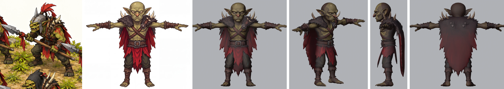
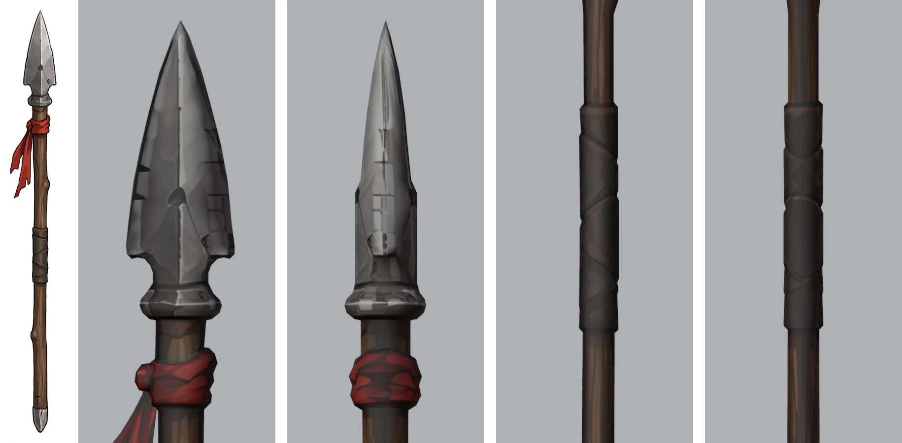
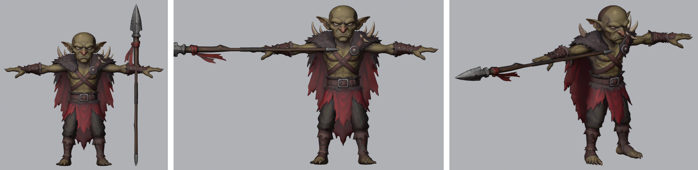
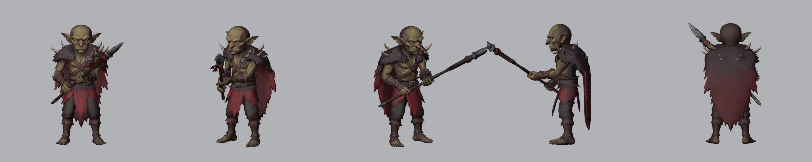
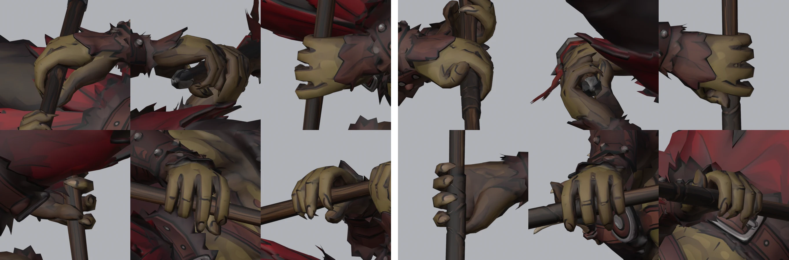
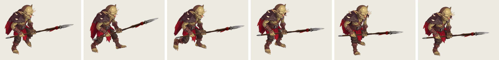
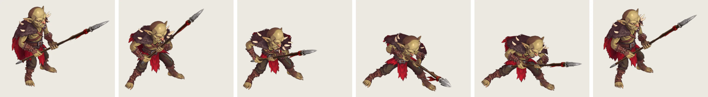
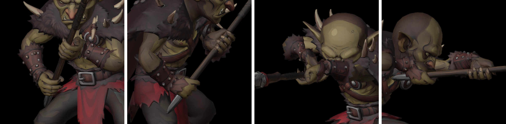
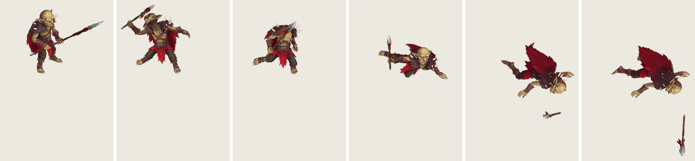

MERIDIUS / GOBLIN SPEARMAN / 3D RIG / 26 OCT 2026
Goblin Spearman 3D rig
The goblin spearman from the spearmen concept, built in Tripo with his spear as a separate model and rigged in Blender on a Mixamo-compatible skeleton. Both hands close round the shaft: the right fist low on the bare wood, the left round the leather grip. Four clips play below from the game's battle camera, in all four facings: his idle, his walk, his spear thrust and his death, in which he drops the spear. In all 379 frames, no body triangle cuts through the spear. He also stands in the 3D Sandbox, where he walks up and thrusts from 2 m.
Pose viewer
Pick a clip and a facing, pause, then step frame by frame to the pose you want to comment on. Screenshot with the readout in view, so the frame is named. Keys: Space play / pause, ← → one frame, Shift + ← → five frames, Home and End first and last frame. The death is drawn at the same scale as the other clips in a wider frame, which scrolls sideways.
The spearman from the front of the spearmen concept. Nano Banana Pro on Higgsfield redrew him as a 4K T-pose with the rabble's face, then without his helmet, bald with his ears free, and drew his spear on its own. You picked the first spear, with the narrower head.
Two separate models, Smart Mesh in quads, each textured at 4K from its own image. The body has 6,419 faces, the spear 543. 240 Tripo credits in all.
He stands 1.49 m tall, centred on his mirror plane. The spear is 1.80 m long, about 1.2 times his height as in the concept. Below the red rag its shaft is thinned from 5.6 to 3.4 cm, so his fingers close round it.
84 bones with Mixamo names, 60 of them deforming, at most four per vertex: fingers, forearm twist bones, the cape and the skirt flaps, which swing with the thighs. The spear rides a bone in the right fist.
The fingers are solved on the skin to close round the shaft. The right fist holds the bare wood 0.39 m from the butt, the left the leather grip 0.37 m further up, kept on it by IK as the spear moves.
Idle - Goblin, Walk - Spearmen, Attack - Goblin Spearmen and Death - Goblin from projects/meridius/Animations, retargeted onto the rig. The spear is kept clear of the body in every frame, and in the death he lets it fall.
From concept to Tripo


Scaled in Blender

Standard pose

Grips

Walk

Spear thrust


Death

Notes
- Carrying the spear. The idle and walk clips were made for empty hands, so both arms keep the standard pose on the clip's chest and he carries the spear levelled across him. The clips' bent-kneed stance brings his right thigh up into the shaft, 20.5 mm into it at the worst, and no bend of the wrist alone clears it. So the right arm turns 10° out at the shoulder, the least turn that clears every frame of both clips, the same turn in every frame. retarget_clips.py adds it to the standard pose in its copy of the rig, so the thrust and the death start from it too.
- The thrust. In every frame the right wrist turns the spear onto the line from the right fist through the clip's left fist (20–64°, 33° on average), and the left hand's hold slides along the shaft to that fist and turns round it to the clip's turn of the hand. Then the shaft is kept off his body in three steps, each the least that clears it. First the spear slides forward through the right fist, by up to 24 cm in frames 4–45, and the left hand's hold slides back by as much, so the left fist stays put. Then the right arm turns at the shoulder, by up to 8° in frames 6–45, the left hold sliding back up to 5 cm more where the turned shaft would be out of its reach. A bend of the right wrist, the third step, was not needed. Each correction is spread over the neighbouring frames, so it never pops.
- Clearance. Every frame was checked for body triangles that cut through the spear (the hands holding it left out), and the least gap between the two measured. No triangle cuts through it in any of the 201 frames of the idle, 42 of the walk, 64 of the thrust or 72 of the death. The least gaps: 38.2 mm in the idle, 7.8 mm in the walk (the right thigh), 5.8 mm in the thrust (his head, frame 33). In the death the right forearm grazes the shaft as the fist opens, up to 4.5 mm into it in two frames around frame 48.
- The death and the ground. The death starts from the idle's first pose and eases into the clip over 8 frames. The arms leave the standard pose over 12 frames, and the left hand lets go of the shaft in frames 3–9. The right fist opens at frame 46, a few frames before the spear in it would touch the ground. The spear then turns level, its blade flat, and drops to the ground in the time its middle would take to fall there, pushed 30 cm out so it stays clear of him. His hips are lifted wherever his body would go below the ground, by up to 24 cm, widened and averaged so the lift never pops. In the walk and the thrust his hips rise and fall by up to 2 and 4 cm, so the lowest point of his soles stays on the ground (within 4 mm).
- Loop and drift. The idle stays in place and eases its last 10 frames back into the first, so it loops seamlessly. The walk is also kept in place: it covers 0.91 m a stride, 0.66 m/s, which the game adds as he moves, and its last frame meets the first. The thrust is the source's first 64 frames (the source holds its upright guard to frame 99), eased in from the idle's first pose over 8 frames and back into it over the last 12.
- Clips used. Idle - Goblin, 201 frames (6.67 s). Walk - Spearmen, 42 frames (1.37 s). Attack - Goblin Spearmen, frames 1–64 (2.10 s). Death - Goblin, 72 frames (2.37 s). All from
projects/meridius/Animations, at 30 fps, with the hips' motion scaled by his hip height against the clips' (0.652). The Mixamo clips stay local, so the retargeted motion is saved in a separate local copy of the rig, not in the rig file. - Frames. Rendered in Blender's Workbench, flat-lit with an outline and cavity, from an orthographic camera 30° above the ground, at 254.5 px per metre, then packed at 0.75 scale. The idle, walk and thrust are framed at 1100 × 880, wide enough for the thrust's reach. The death is framed at 2080 × 1300, because he falls far to one side in some facings and the spear lands beyond him.
- Limits. The left wrist bends hard in the thrust, up to 82° from the forearm, to follow the clip's hand onto the shaft (the right up to 50°). The spear sliding 24 cm through the right fist is a cheat: he draws back with his fist near the butt rather than shifting his grip. At its nearest the shaft passes 5.8 mm from his head. The right thumb lies along the shaft instead of closing round it, and at the right grip the little finger goes up to 4.7 mm into the shaft's knot rings.
- Files.
projects/meridius/references/characters/blender/goblin_spear/goblin_spear_rig.blend(rig, spear and grips) andgoblin_spear_base.blend, built by the scripts in itstools/:build_goblin_spear.pyandrig_goblin_spear.py, withrender_check.pyandrender_rig.pyfor the review renders and measurements. The clips are retargeted byretarget_clips.py, rendered byrender_clips.pyand packed bypack_sheets.py;export_godot.pyandcheck_export.pymake and check the Godot model. The Tripo exports are inreferences/characters/tripo/goblin_spear/, and job IDs and costs inreferences/characters/goblin_spear/jobs.json.